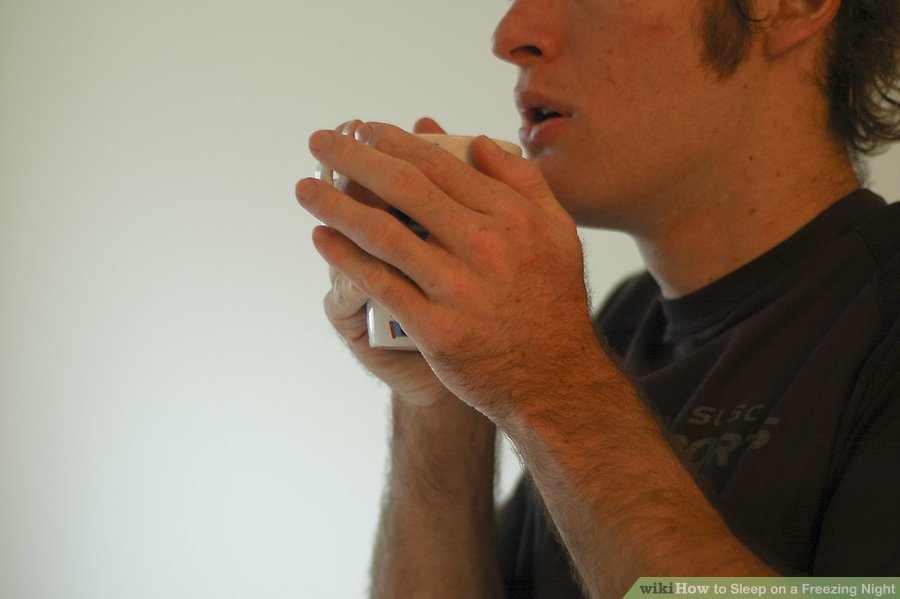
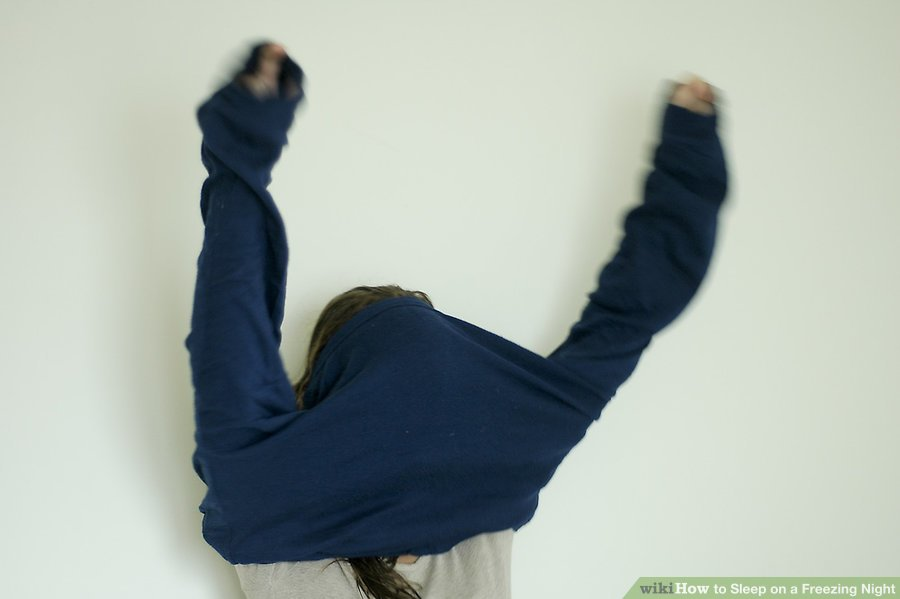
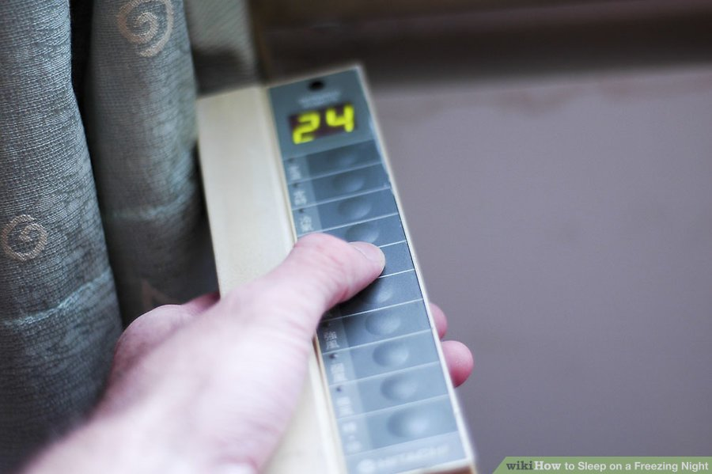
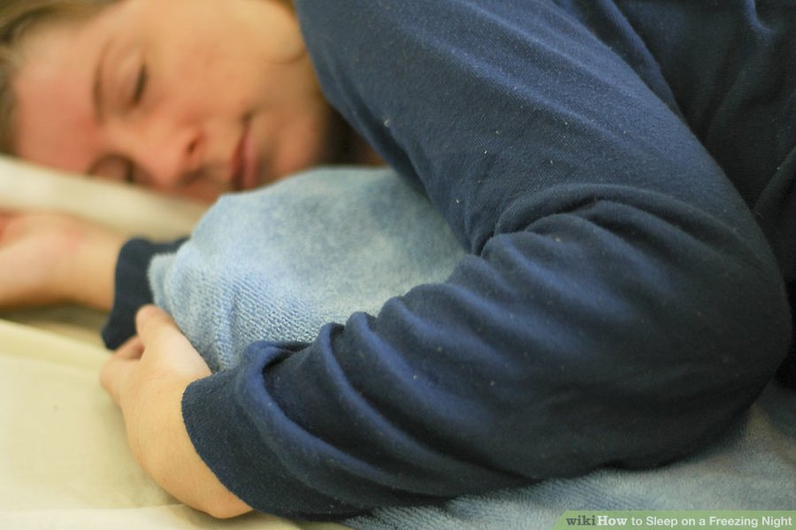

- Drink a glass of hot milk. Milk contains calcium, which helps relax you and is good for your shivering bones. The warmth of the drink warms your cockles up. If you're not like me, and you don't like milk on it's own, then add something to it, such as cocoa powder, making hot chocolate. Do NOT include any sugar to it, though. Or, if you are afraid that the chocolate will keep you awake, add honey to the milk, instead. This will keep you awake on a cold night, which is BAD.

- Wear an extra sweater or vest. These are extra clothes and are good for preserving heat.
- Snuggle up as tight as you can Add extra blankets for more warmth

- If your house has heating, turn it on. Turn it to a temperature which suits you and which you believe will satisfy you whilst sleeping

- Wear a pair of warm bed socks (the fuzzy ones are particularly comfortable).

- Use a hot water bottle to take the chill off of your sheets. Either remove it before you get into bed, or make sure it is wrapped up, so that you it doesn't touch your skin (that can burn.)